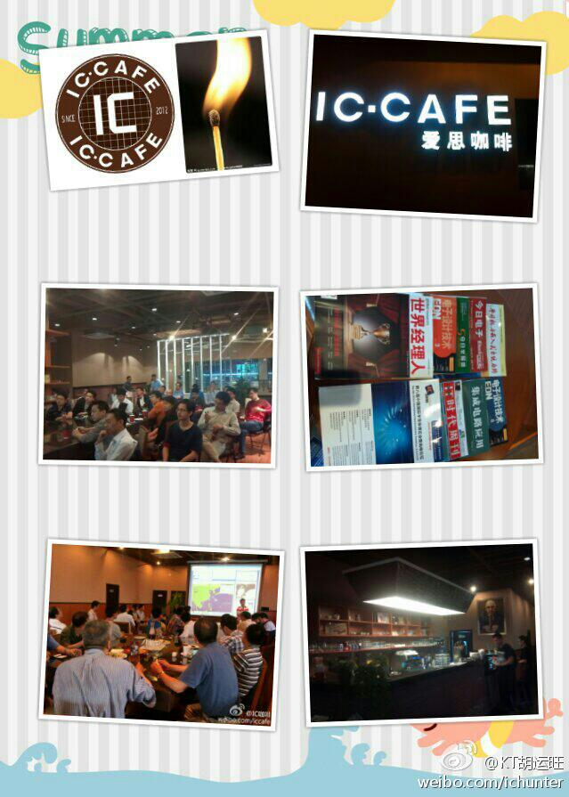

转转更热闹。//@KT胡运旺:无论是参加了讲座沙龙活动，还是随意来坐坐偶遇了有芯人，都可能收获了或知识或信息或人脉。知识有价否？信息有价否？IC产业链人脉有价否？@IC咖啡胡运旺:创业咖啡大多有政府支持,如场地或资金(有的近百万),因促进创业符合政策且善于与政府沟通.IC咖啡重点是技术交流,信息分享,产业上下游互动,促进创业非重点,俺又不善交际,目前还没啥大温暖.在此请在@IC咖啡 获得或希望以后获得知识,信息及人脉等的朋友多支持,无论点杯咖啡或顺手转下微博,不胜感谢! 